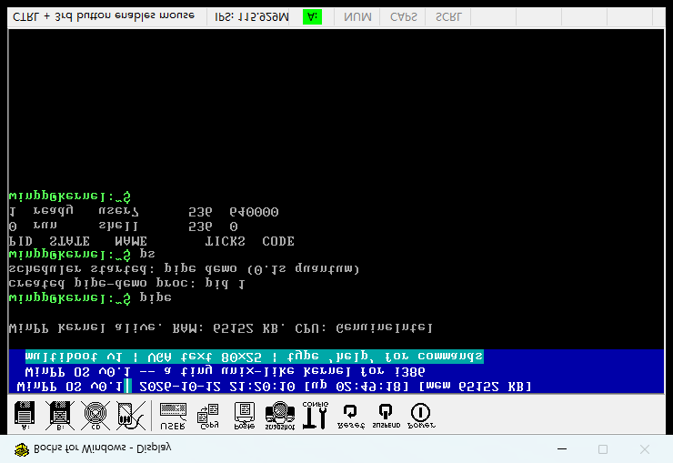
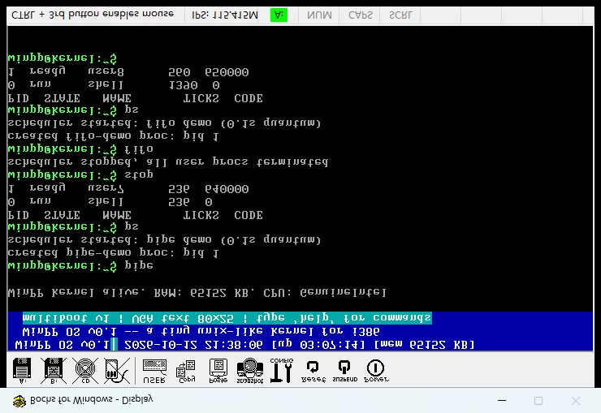
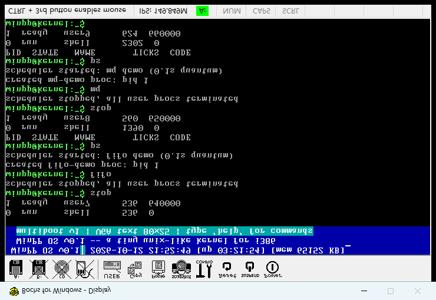

一句话意义：第四阶段每个进程有了自己的"天地"（独立地址空间）；第五阶段让这些天地之间能互相传话、传数据——管道、命名管道、消息队列三大件全部落地，Bochs 实机 + 串口 + 截图三通道验证通过。
| 编号 | 调用 | 参数 | 说明 |
|---|---|---|---|
| 9 | pipe | — | 创建匿名管道，返回读端 fd（写端 = fd+1） |
| 10 | fifo_create | name | 创建/复用命名管道，返回读端 fd |
| 11 | msgsend | src, len | 投递一条消息（≤32B）到全局队列 |
| 12 | msgrecv | dst | 取出一条消息，返回长度；空返回 -1 |
[ipc] init: pipes + fifos + mq ready
[pipe] demo proc pid 1
[ipc] pipe created: read-fd=0 write-fd=1
[pid1] Hello Pipe!
[pid1] Hello Pipe!
# ... 循环 461 次：写 "Hello Pipe!" 进管道 -> 从读端读回 -> 串口打印
[fifo] demo proc pid 1
[ipc] fifo 'fifo0' created: read-fd=2 write-fd=3
[pid1] Hello FIFO!
[pid1] Hello FIFO!
# ... 循环 470 次：写 "Hello FIFO!" -> 读回 -> 串口打印
[mq] demo proc pid 1 [mq] send len=2 total=1 # 投 "AB"（2 字节） [mq] send len=5 total=2 # 投 "msg12"（5 字节） [mq] send len=7 total=3 # 投 "msg-789"（7 字节） [mq] recv len=2 total=2 # 收 "AB" [pid1] AB [mq] recv len=5 total=1 # 收 "msg12" [pid1] msg12 [mq] recv len=7 total=0 # 收 "msg-789" [pid1] msg-789 # ... 三种不同长度的消息各自 375 条，收发一一对应、总条数归零



user7/user8 最初把 pipe() / fifo_create() 写在循环体内：每轮新建一对 fd。匿名管道池只有 4 个对象，第 5 轮起创建失败（返回 -1），后续读写退化到旧槽。修正：管道/命名管道是持久对象，创建移到循环外只调一次，循环内仅 write/read/print。复测：pipe created / fifo created 各 1 次，闭环 461/470 次，0 页错误。